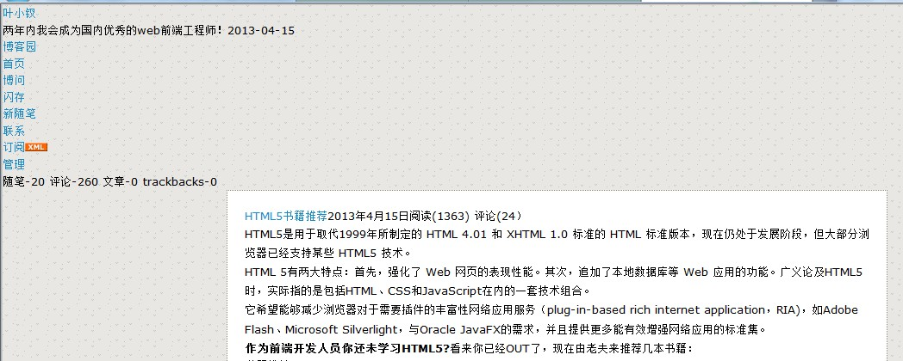

导航
【初探HTML5之使用新标签布局】用html5布局我的博客页！
【HTML5初探之form标签】解放表单验证、增加文件上传、集成拖放
【HTML5初探之绘制图像（上）】看我canvas元素引领下一代web页面
【HTML5初探之绘制图像（下）】看我canvas元素引领下一代web页面
【HTML5初探之多媒体元素】视频播放HTML5、Flash谁才是王道？
【HTML5初探之通信API】跨域门槛不再高、数据推送不是梦
【HTML5初探之Geolocation API】让我们来回去地理信息
前言
一直觉得该学习HTML5，这是web前端大势所趋，若此时还不学习，必将被淹没于技术的洪流，何谈成为优秀的web前端技术人员？
于是乎，小的来了。昨天初略看了下大纲，HTML包括以下东西：
......
千里之行始于足下，让我揭开HTML5新增的布局类标签吧！
HTML5的布局
|
标签 |
个人理解 |
|
article |
相当于：<div class="article"></div> 出现动机不明，小的不明，据说是为了增加语义化，小的就在想在低版本浏览器下咋办，无解。 一般用于一个独立的环境，比如：帖子、文章或者其它独立的地方 |
|
section |
小的感觉还是div了，据说该元素用于网站内容分块，小的亦不明白为神马我不老老实实的用div就算了，答案是语义化。 提示： 1、当使用该容器需要直接定义样式时建议使用div（不懂啊） 2、section元素内容可以单独存储到数据库或者输出到word中（这个听起来靠谱点，比如用户评论） 3、该元素一般具有标题 总结：在书上得到的结论是能不用就不用，这样对吗？？？ |
|
nav |
相当于：<div class="nav"><ul></ul></div> 该元素个人认为较靠谱……，一般用于页面头部导航或者其它会使用到ul的地方，或者分页处。 |
|
aside |
该元素一般就是我们所谓两列布局的话，左边出现菜单栏容器 |
|
time |
html5中，使用时间标签被单独提了出来，这个还算可以理解，且用着试试 支持一pubdate属性，表示为发布日期 |
|
header |
语义化标签，相当于<div class="header"></div>小的认为能用 其中有个hgroup可以用作副标题的存在 |
|
footer |
语义化标签，相当于<div class="footer"></div> |
|
address |
相当于div了，小的认为没什么意义了，又要考虑 向下兼容，一般在footer中包含与联系人地址有关的东东 |
新标签制作博客页
现在来一张我博客页的截图
其中大概包括以下几块：
1、header 头部
2、navigation 导航
3、aside 左栏信息
4、main 正文
5、评论
在做的过程中，我总把div和section等不太分的清楚，慢慢的就模糊了彼此之间的界限，最后得出一个结论：
一些新元素不是很有必要！这就是我的第一感受，但应该是不够宏观，到html5学到后面，估计会看到他们存在的意义。
完成的界面
昨晚做完，大概是以下模样，到后面确实晚了，就没做了，因为我要给我女朋友幸福。。。。
基本用到了以上每个元素，一些我理解了，但是一些我不能完全理解；
 View Code
View Code

1 <!DOCTYPE html> 2 <html xmlns="http://www.w3.org/1999/xhtml"> 3 <head> 4 <title></title> 5 <style type="text/css"> 6 body, div, dl, dt, dd, ul, ol, li, h1, h2, h3, h4, h5, h6, pre, code, form, fieldset, legend, input, button, textarea, p, blockquote, th, td { margin: 0; padding: 0; } 7 h1, h2, h3, h4, h5, h6 { font-size: 100%; font-weight: normal; } 8 html, body { background: none repeat scroll 0 0 #FFFFFF; color: #000000; } 9 body { background-image: url("http://common.cnblogs.com/Skins/sea/images/back.gif"); font-family: Verdana,Geneva,Arial,Helvetica,sans-serif; font-size: 13px; line-height: 1.5; word-wrap: break-word; } 10 p { line-height: 1.7;} 11 a { text-decoration: none; color: #1A8BC8; } 12 a:visited { color: #1A8BC8; } 13 li { list-style: none; } 14 img { border: none;} 15 footer { text-align: center; color: Gray;} 16 .c { clear: both;} 17 .l-h-1 { line-height: 1;} 18 .f-n { float: none;} 19 .l { float : left;} 20 .r { float: right;} 21 22 23 .header { background: white url("http://common.cnblogs.com/Skins/sea/images/bg_header.jpg") no-repeat left top; height: 195px; border: 1px dotted #8B8D72; } 24 .header hgroup{ margin: 50px 0 0 265px; } 25 .header h1 a{ font-size: 17px; font-weight: bold; text-decoration: none; color: Black;} 26 27 .nav { margin: 0 20px 20px 260px; background: white; border: 1px dotted #8B8D72; border-top: none;} 28 .nav ul{ padding: 5px 0 0 5px; } 29 .nav li{ display: inline; padding: 5px 5px 0; } 30 .nav aside { text-align: right; padding: 0 5px 5px;} 31 32 .main { margin: 0 20px 20px 260px; background: white; border: 1px dotted #8B8D72; padding: 20px;} 33 .main article header { margin-bottom: 10px; } 34 .main article header h1{ font-size: 16px; font-weight: bold; } 35 .main article header h1 a{ color: #1A8BC8; text-decoration: none; } 36 .main article header h1 time, .main article header h1 span{ font-size: 12px; font-weight: normal; float: right; } 37 .main article section h2{ background: none repeat scroll 0 0 #2B6695; border-radius: 6px; box-shadow: 0 0 0 1px #5F5A4B, 1px 1px 6px 1px rgba(10, 10, 0, 0.5); color: #FFFFFF; font-size: 14px; font-weight: bold; height: 25px; line-height: 25px; margin: 15px 0 !important; padding: 5px 0 5px 20px; text-shadow: 2px 2px 3px #222222; } 38 .main .book { margin: 10px; } 39 .main .book header { border-bottom: 1px solid #2B6695; } 40 .main .book .author { font-weight: bold;} 41 .main .book h3 { background: #2B6695; padding: 5px 20px; border-radius: 4px 4px 0 0; display: inline-block; margin-left: 20px; font-weight: bold; color: White; } 42 43 .main .green_channel { border: 1px dotted #8B8D72; padding: 10px 10px ; margin: 10px 0 10px 0; width: 420px;} 44 .main .green_channel a { margin: 0 2px; display: inline-block; padding: 2px 10px; font-size: 12px; font-weight: bold; color: White; background: url("%3D%3D") repeat-x scroll 0 0 transparent;} 45 .main .green_channel .green { background-color: #2DAEBF; } 46 .main .green_channel .red { background-color: #E33100;} 47 .main .green_channel .yellow { background-color: #FFB515;} 48 .main .green_channel .gray { background-color: #EEEEEE; color: #555555;} 49 .main .green_channel img { vertical-align: -7px;} 50 51 .main .author_info { display: inline-block; } 52 .main .author_info .info_txt { display: inline-block; text-decoration: none; font-size: 12px; line-height: 1.5 } 53 .main .digg { float: right;} 54 .main .digg div { margin: 0 10px; display: inline-block; color: #075DB3; font-family: Verdana; font-size: 14px; text-align: center;} 55 .main .digg div.f-n { float: none; display: block;color: gray; font-size: 12px;} 56 .main .digg .top { background: url("http://static.cnblogs.com/images/upup.gif") no-repeat scroll 0 0 transparent; width: 46px; height: 52px;} 57 .main .digg .down { background: url("http://static.cnblogs.com/images/downdown.gif") no-repeat scroll 0 0 transparent; width: 46px; height: 52px;} 58 59 .aside { position: absolute; left: 20px; top: 105px; width: 220px; border: 1px dotted #8B8D72; background: white;} 60 .aside .my_info { margin: 10px; line-height: 1.4;} 61 .aside .side_bar { margin: 10px;} 62 .aside .side_bar h3{ background: url("http://common.cnblogs.com/Skins/sea/images/bg_listtitle.gif") ; background-repeat: no-repeat; margin: 10px 0; font-weight: bold;} 63 64 .comment { margin: 0 20px 20px 260px;} 65 .comment h2 { padding: 5px 0;} 66 .comment li { padding: 5px 15px; margin: 10px 0; border: 1px dotted #8B8D72; background: white; } 67 .comment li a{ padding: 0 3px; } 68 </style> 69 </head> 70 <body> 71 <header class="header"> 72 <hgroup> 73 <h1> 74 <a href="http://www.cnblogs.com/yexiaochai/">叶小钗</a></h1> 75 <h2> 76 两年内我会成为国内优秀的web前端工程师！2013-04-15</h2> 77 </hgroup> 78 </header> 79 <nav class="nav"> 80 <ul> 81 <li><a href="http://www.cnblogs.com/">博客园</a></li> 82 <li><a href="http://www.cnblogs.com/yexiaochai/">首页</a></li> 83 <li><a href="http://q.cnblogs.com">博问</a></li> 84 <li><a href="http://home.cnblogs.com/ing/">闪存</a></li> 85 <li><a href="http://www.cnblogs.com/yexiaochai/admin/EditPosts.aspx?opt=1">新随笔</a></li> 86 <li><a href="http://space.cnblogs.com/msg/send/%e5%8f%b6%e5%b0%8f%e9%92%97">联系</a></li> 87 <li><a href="http://www.cnblogs.com/yexiaochai/rss">订阅<img alt="订阅" src="http://images.cnblogs.com/xml.gif"></a></li> 88 <li><a href="http://www.cnblogs.com/yexiaochai/admin/EditPosts.aspx">管理</a></li> 89 </ul> 90 <!--不知道是否合理--> 91 <aside> 92 随笔-20 评论-260 文章-0 trackbacks-0 93 </aside> 94 </nav> 95 <div class="main"> 96 <article> 97 <header> 98 <h1> 99 <a href="#">HTML5书籍推荐</a><time pubdate="pubdate" value="2013-04-15">2013年4月15日</time><span>阅读(1363) 评论(24）</span></h1> 100 </header> 101 <p> 102 HTML5是用于取代1999年所制定的 HTML 4.01 和 XHTML 1.0 标准的 HTML 标准版本，现在仍处于发展阶段，但大部分浏览器已经支持某些 103 HTML5 技术。<br /> 104 HTML 5有两大特点：首先，强化了 Web 网页的表现性能。其次，追加了本地数据库等 Web 应用的功能。广义论及HTML5时，实际指的是包括HTML、CSS和JavaScript在内的一套技术组合。<br /> 105 它希望能够减少浏览器对于需要插件的丰富性网络应用服务（plug-in-based rich internet application，RIA)，如Adobe Flash、Microsoft 106 Silverlight，与Oracle JavaFX的需求，并且提供更多能有效增强网络应用的标准集。<br /> 107 <b>作为前端开发人员你还未学习HTML5?</b>看来你已经OUT了，现在由老夫来推荐几本书籍：</p> 108 <section> 109 <h2> 110 书籍推荐</h2> 111 <article class="book"> 112 <header> 113 <h3> 114 HTML5高级程序设计</h3> 115 </header> 116 <div class="author"> 117 （荷）柳伯斯，（美）阿伯斯，（美）萨姆 著</div> 118 <p> 119 本书首先介绍了HTML5的历史背景、新的语义标签及与以往HTML版本相比的根本变化，同时揭示了HTML5背后的设计原理．从第2章起，分别围绕构建令人神往的富Web应用，逐一讨论了HTML5的Canvas、Geolocation、Communication、WebSocket、Forms、Web 120 Workers、Storage等API的使用，辅以直观明了的客户端和服务器端示例代码，让开发人员能够迅速理解和掌握新一代Web标准所涵盖的核心技术。本书最后探索了离线Web应用并展望了HTML5未来的发展前景。<br /> 121 本书面向有一定经验的Web应用开发人员，对HTML5及未来Web应用技术发展抱有浓厚兴趣的读者也可以学习参考。 122 </p> 123 </article> 124 <article class="book"> 125 <header> 126 <h3> 127 HTML5&CSS3权威指南</h3> 128 </header> 129 <div class="author"> 130 陆凌牛</div> 131 <p> 132 如果你是一位有前瞻性的Web前端工作者，那么你一定会从《HTML5与CSS3权威指南》中受益，因为它就是专门为你打造的。《HTML 5与CSS 3权威指南》内容系统而全面，详尽地讲解了HTML 133 5和CSS 3的所有新功能和新特性；技术新颖，所有知识点都紧跟HTML 5与CSS 3的最新发展动态（HTML 5和CSS 3仍在不断完善之中）；实战性强（包含246个示例页面），不仅每个知识点都配有精心设计的小案例（便于动手实践），而且还有两个综合性的案例（体现用HTML 134 5与CSS 3开发Web应用的思维和方法）。《HTML5与CSS3权威指南》不仅能满足你全面而系统地学习理论知识的需求，还能满足你需要充分实践的需求。</p> 135 </article> 136 <article class="book"> 137 <header> 138 <h3> 139 Javascript高级程序设计</h3> 140 </header> 141 <div class="author"> 142 (美)(Nicholas C.Zakas)扎卡斯</div> 143 <p> 144 JavaScript 是根据 "ECMAScript"标准制定的网页脚本语言。这个标准由 ECMA 组织发展和维护。ECMA-262 是正式的 JavaScript 145 标准。JavaScript是目前Web客户端开发的主要编程语言，也是Ajax的核心技术之一。 146 </p> 147 </article> 148 </section> 149 <footer>该文章属于叶小钗原创文章，欢迎转载，转载请注明出处</footer> 150 </article> 151 <div class="green_channel"> 152 绿色通道： <a class="green" href="javascript:void(0);">好文要顶</a> <a href="javascript:void(0);" 153 class="red">关注我</a> <a href="javascript:void(0);" class="yellow">收藏该文</a> <a target="_blank" 154 href="#" class="gray">与我联系</a> <img alt="" src="http://static.cnblogs.com/images/icon_weibo_24.png"> 155 </div> 156 157 <div class="author_info"> 158 <a target="_blank" href="http://home.cnblogs.com/u/yexiaochai/"> 159 <img alt="" class="author_avatar" src="http://pic.cnitblog.com/face/u294743.jpg?id=23185449"></a> 160 <div class="info_txt"> 161 <a href="http://home.cnblogs.com/u/yexiaochai/">叶小钗</a><br> 162 <a href="http://home.cnblogs.com/u/yexiaochai/followees">关注 - 19</a><br> 163 <a href="http://home.cnblogs.com/u/yexiaochai/followers">粉丝 - 130</a> 164 </div> 165 <div class="l-h-1"> 166 <a href="#">+加关注</a> 167 </div> 168 <div class="c"></div> 169 </div> 170 <div class="digg"> 171 <div class="top">6</div> 172 <div class="down">0</div> 173 <div class="f-n">(请您对文章做出评价)</div> 174 </div> 175 </div> 176 <aside class="aside"> 177 <div class="my_info"> 178 昵称：<a href="http://home.cnblogs.com/u/yexiaochai/">叶小钗</a><br> 179 园龄：<a title="入园时间：2011-04-23" href="http://home.cnblogs.com/u/yexiaochai/">1年11个月</a><br> 180 粉丝：<a href="http://home.cnblogs.com/u/yexiaochai/followers/">130</a><br> 181 关注：<a href="http://home.cnblogs.com/u/yexiaochai/followees/">19</a><div id="p_b_follow"> 182 </div> 183 <div id="p_b_ing"> 184 <a href="http://home.cnblogs.com/ing/my/">我的闪存</a></div> 185 </div> 186 187 <div class="side_bar"> 188 <h3>常用链接</h3> 189 <ul> 190 <li><a href="http://www.cnblogs.com/yexiaochai/MyPosts.html" id="ctl01_rptMainLinks_lnkLinkItem_0"> 191 我的随笔</a></li> 192 <li><a href="http://www.cnblogs.com/yexiaochai/MyComments.html" id="ctl01_rptMainLinks_lnkLinkItem_1"> 193 我的评论</a></li> 194 <li><a href="http://www.cnblogs.com/yexiaochai/OtherPosts.html" title="我发表过评论的随笔" 195 id="ctl01_rptMainLinks_lnkLinkItem_2">我的参与</a></li> 196 <li><a href="http://www.cnblogs.com/yexiaochai/RecentComments.html" id="ctl01_rptMainLinks_lnkLinkItem_3"> 197 最新评论</a></li> 198 <li><a href="http://www.cnblogs.com/yexiaochai/tag/" id="ctl01_rptMainLinks_lnkLinkItem_4"> 199 我的标签</a></li> 200 </ul> 201 <h3>随笔分类</h3> 202 <ul> 203 <li class="catListItem"><a href="http://www.cnblogs.com/yexiaochai/category/471015.html" 204 class="listitem" id="ctl04_CatList_LinkList_0_Link_0">css</a></li> 205 <li class="catListItem"><a href="http://www.cnblogs.com/yexiaochai/category/471013.html" 206 class="listitem" id="ctl04_CatList_LinkList_0_Link_1">HTML5&CSS3初探</a></li> 207 <li class="catListItem"><a href="http://www.cnblogs.com/yexiaochai/category/471016.html" 208 class="listitem" id="ctl04_CatList_LinkList_0_Link_2">javascript</a></li> 209 <li class="catListItem"><a href="http://www.cnblogs.com/yexiaochai/category/309100.html" 210 class="listitem" id="ctl04_CatList_LinkList_0_Link_3">Java学习(3)</a></li> 211 <li class="catListItem"><a href="http://www.cnblogs.com/yexiaochai/category/326208.html" 212 class="listitem" id="ctl04_CatList_LinkList_0_Link_4">Web前端(13)</a></li> 213 <li class="catListItem"><a href="http://www.cnblogs.com/yexiaochai/category/329149.html" 214 class="listitem" id="ctl04_CatList_LinkList_0_Link_5">工作点滴(3)</a></li> 215 <li class="catListItem"><a href="http://www.cnblogs.com/yexiaochai/category/326205.html" 216 class="listitem" id="ctl04_CatList_LinkList_0_Link_6">设计模式</a></li> 217 <li class="catListItem"><a href="http://www.cnblogs.com/yexiaochai/category/306145.html" 218 class="listitem" id="ctl04_CatList_LinkList_0_Link_7">学习感悟(3)</a></li> 219 </ul> 220 <h3>最近评论</h3> 221 <ul> 222 <li class="recent_comment_title"><a href="http://www.cnblogs.com/yexiaochai/archive/2013/04/15/3022395.html#2658242"> 223 1. Re:两年内，我要成为国内优秀的前端技术人员！</a></li> 224 <li class="recent_comment_body"><a title="查看所回复的评论" href="#2658237">@</a>SmileCoder<br> 225 你目标有点难哦</li> 226 <li class="recent_comment_author">--叶小钗</li> 227 <li class="recent_comment_title"><a href="http://www.cnblogs.com/yexiaochai/archive/2013/04/15/3022395.html#2658237"> 228 2. Re:两年内，我要成为国内优秀的前端技术人员！</a></li> 229 <li class="recent_comment_body"><a title="查看所回复的评论" href="#2658193">@</a>叶小钗<br> 230 2年内我一定要成为国内优秀的NET软件工程师</li> 231 <li class="recent_comment_author">--SmileCoder</li> 232 <li class="recent_comment_title"><a href="http://www.cnblogs.com/yexiaochai/archive/2013/04/15/3022395.html#2658218"> 233 3. Re:两年内，我要成为国内优秀的前端技术人员！</a></li> 234 <li class="recent_comment_body">真正要改变自己不是一件容易的事。</li> 235 <li class="recent_comment_author">--izhangxu</li> 236 <li class="recent_comment_title"><a href="http://www.cnblogs.com/yexiaochai/archive/2013/04/15/3022395.html#2658196"> 237 4. Re:两年内，我要成为国内优秀的前端技术人员！</a></li> 238 <li class="recent_comment_body"><a title="查看所回复的评论" href="#2658081">@</a>zuiaitianxibi<br> 239 我一直认为这种题非常2.。。</li> 240 <li class="recent_comment_author">--叶小钗</li> 241 <li class="recent_comment_title"><a href="http://www.cnblogs.com/yexiaochai/archive/2013/04/15/3022395.html#2658193"> 242 5. Re:两年内，我要成为国内优秀的前端技术人员！</a></li> 243 <li class="recent_comment_body"><a title="查看所回复的评论" href="#2658180">@</a>赵弟栋<br> 244 哪个是你妹。。。</li> 245 <li class="recent_comment_author">--叶小钗</li> 246 <li class="recent_comment_title"><a href="http://www.cnblogs.com/yexiaochai/archive/2013/04/15/3022395.html#2658180"> 247 6. Re:两年内，我要成为国内优秀的前端技术人员！</a></li> 248 <li class="recent_comment_body">好久不见了 妹</li> 249 <li class="recent_comment_author">--赵弟栋</li> 250 <li class="recent_comment_title"><a href="http://www.cnblogs.com/yexiaochai/archive/2013/04/15/3022395.html#2658167"> 251 7. Re:两年内，我要成为国内优秀的前端技术人员！</a></li> 252 <li class="recent_comment_body">加油吧！</li> 253 <li class="recent_comment_author">--刘玲</li> 254 <li class="recent_comment_title"><a href="http://www.cnblogs.com/yexiaochai/archive/2013/04/15/3022395.html#2658148"> 255 8. Re:两年内，我要成为国内优秀的前端技术人员！</a></li> 256 <li class="recent_comment_body">好吧 支持一下</li> 257 <li class="recent_comment_author">--clith</li> 258 <li class="recent_comment_title"><a href="http://www.cnblogs.com/yexiaochai/archive/2013/04/15/3022395.html#2658144"> 259 9. Re:两年内，我要成为国内优秀的前端技术人员！</a></li> 260 <li class="recent_comment_body"><a title="查看所回复的评论" href="#2658132">@</a>月漩涡<br> 261 多谢道友</li> 262 <li class="recent_comment_author">--叶小钗</li> 263 <li class="recent_comment_title"><a href="http://www.cnblogs.com/yexiaochai/archive/2013/04/15/3022395.html#2658132"> 264 10. Re:两年内，我要成为国内优秀的前端技术人员！</a></li> 265 <li class="recent_comment_body">送你一首<a target="_blank" href="http://bz.5sing.com/1790260.html">初心</a></li> 266 <li class="recent_comment_author">--月漩涡</li> 267 </ul> 268 </div> 269 270 </aside> 271 272 <div class="comment"> 273 <h2> 274 评论：</h2> 275 <ul> 276 <li><a href=""># 1楼</a> 277 <time>2013-04-15 16:48</time> 278 | <a href="">2013-04-15 16:48</a> 279 <p> 280 感觉浑身气爽啊，我也何尝不是有过此想法，其实舍去与舍去，需要改变的都是自己，而自己改变了，周围的一切也会随之改变，大道在于实践，希望你的实践能够帮助自己，祝你早日走上那一步了。</p> 281 <div> 282 <a href="javascript:void(0);">回复</a> <a href="javascript:void(0);">引用</a> <a href="javascript:void(0);"> 283 删除</a> <a class="r" href="javascript:void(0);">反对(0)</a> <a href="javascript:void(0);" 284 class="r">支持(0)</a> 285 </div> 286 </li> 287 <li><a href=""># 1楼</a> 288 <time>2013-04-15 16:48</time> 289 | <a href="">2013-04-15 16:48</a> 290 <p> 291 感觉浑身气爽啊，我也何尝不是有过此想法，其实舍去与舍去，需要改变的都是自己，而自己改变了，周围的一切也会随之改变，大道在于实践，希望你的实践能够帮助自己，祝你早日走上那一步了。</p> 292 <div> 293 <a href="javascript:void(0);">回复</a> <a href="javascript:void(0);">引用</a> <a href="javascript:void(0);"> 294 删除</a> <a class="r" href="javascript:void(0);">反对(0)</a> <a href="javascript:void(0);" 295 class="r">支持(0)</a> 296 </div> 297 </li> 298 <li><a href=""># 1楼</a> 299 <time>2013-04-15 16:48</time> 300 | <a href="">2013-04-15 16:48</a> 301 <p> 302 感觉浑身气爽啊，我也何尝不是有过此想法，其实舍去与舍去，需要改变的都是自己，而自己改变了，周围的一切也会随之改变，大道在于实践，希望你的实践能够帮助自己，祝你早日走上那一步了。</p> 303 <div> 304 <a href="javascript:void(0);">回复</a> <a href="javascript:void(0);">引用</a> <a href="javascript:void(0);"> 305 删除</a> <a class="r" href="javascript:void(0);">反对(0)</a> <a href="javascript:void(0);" 306 class="r">支持(0)</a> 307 </div> 308 </li> 309 <li><a href=""># 1楼</a> 310 <time>2013-04-15 16:48</time> 311 | <a href="">2013-04-15 16:48</a> 312 <p> 313 感觉浑身气爽啊，我也何尝不是有过此想法，其实舍去与舍去，需要改变的都是自己，而自己改变了，周围的一切也会随之改变，大道在于实践，希望你的实践能够帮助自己，祝你早日走上那一步了。</p> 314 <div> 315 <a href="javascript:void(0);">回复</a> <a href="javascript:void(0);">引用</a> <a href="javascript:void(0);"> 316 删除</a> <a class="r" href="javascript:void(0);">反对(0)</a> <a href="javascript:void(0);" 317 class="r">支持(0)</a> 318 </div> 319 </li> 320 <li><a href=""># 1楼</a> 321 <time>2013-04-15 16:48</time> 322 | <a href="">2013-04-15 16:48</a> 323 <p> 324 感觉浑身气爽啊，我也何尝不是有过此想法，其实舍去与舍去，需要改变的都是自己，而自己改变了，周围的一切也会随之改变，大道在于实践，希望你的实践能够帮助自己，祝你早日走上那一步了。</p> 325 <div> 326 <a href="javascript:void(0);">回复</a> <a href="javascript:void(0);">引用</a> <a href="javascript:void(0);"> 327 删除</a> <a class="r" href="javascript:void(0);">反对(0)</a> <a href="javascript:void(0);" 328 class="r">支持(0)</a> 329 </div> 330 </li> 331 <li><a href=""># 1楼</a> 332 <time>2013-04-15 16:48</time> 333 | <a href="">2013-04-15 16:48</a> 334 <p> 335 感觉浑身气爽啊，我也何尝不是有过此想法，其实舍去与舍去，需要改变的都是自己，而自己改变了，周围的一切也会随之改变，大道在于实践，希望你的实践能够帮助自己，祝你早日走上那一步了。</p> 336 <div> 337 <a href="javascript:void(0);">回复</a> <a href="javascript:void(0);">引用</a> <a href="javascript:void(0);"> 338 删除</a> <a class="r" href="javascript:void(0);">反对(0)</a> <a href="javascript:void(0);" 339 class="r">支持(0)</a> 340 </div> 341 </li> 342 <li><a href=""># 1楼</a> 343 <time>2013-04-15 16:48</time> 344 | <a href="">2013-04-15 16:48</a> 345 <p> 346 感觉浑身气爽啊，我也何尝不是有过此想法，其实舍去与舍去，需要改变的都是自己，而自己改变了，周围的一切也会随之改变，大道在于实践，希望你的实践能够帮助自己，祝你早日走上那一步了。</p> 347 <div> 348 <a href="javascript:void(0);">回复</a> <a href="javascript:void(0);">引用</a> <a href="javascript:void(0);"> 349 删除</a> <a class="r" href="javascript:void(0);">反对(0)</a> <a href="javascript:void(0);" 350 class="r">支持(0)</a> 351 </div> 352 </li> 353 </ul> 354 </div> 355 356 <footer>版权所有·博客园</footer> 357 </body> 358 </html>
关于IE7、8
不必说低版本浏览器是不能识别该元素的！

传说中的解决方案：
<script type="text/javascript">
document.createElement('header');
</script>
<style type="text/css">
header { display: block;}
</style>
但老夫在冲忙中试了试，亦不行，具体相关问题，留待小弟第一次学完后，2次学习时在一并回顾。
结束语
因为是初学HTML5，肯定会有很多不足的地方，当我真正做起来的时候，感觉有所不同，最后居然给header等标签单独定义了class？？？
新东西还是需要很多思考的，这样和直接用div的界限更加不分明了，此问题留待以后解决，有必要学习看看比较成熟的HTML5网站。
昨晚学的东西比较实在，也没有什么难点，下次小的看看新增的form标签会不会有所不同呢？